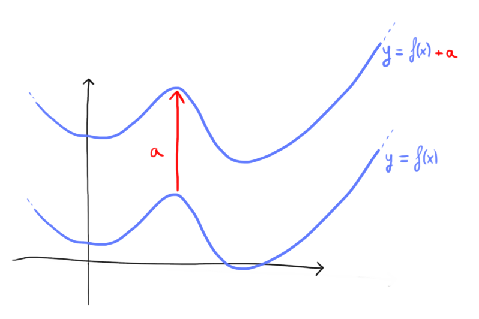
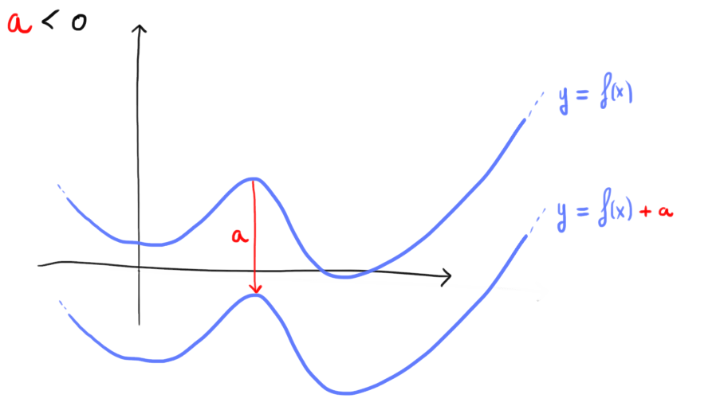

Consideriamo la funzione
\[
f(x) = \dfrac{2 - x}{1 -x}
\]
il cui grafico è rappresentato tratteggiato in figura.
Come nell'esempio precedente utilizzando lo slider persente nel grafico interattivo è possibile aggiungere alla
funzione \(f\) un valore costante.
Come prima osserviamo che
-
se il valore aggiunto è positivo, la traslazione è verso l'alto
-
se il valore aggiunto è negativo, la traslazione è verso il basso
Consideriamo una funzione \(f\)
\[
y = f(x)
\]
ed un valore \(\color{red}{}a \color{black}{} \in \mathbb{R}\).
Il grafico della funzione \(g\) definita come
\[
y = f(x) +\color{red}{a}
\]
si ottiene traslando il grafico della funzione \(f\) di \(\color{red}{}a\) unità.
La traslazione è
-
verso l'alto se \(a \gt 0\)

-
verso il basso se \(a \lt 0\)
